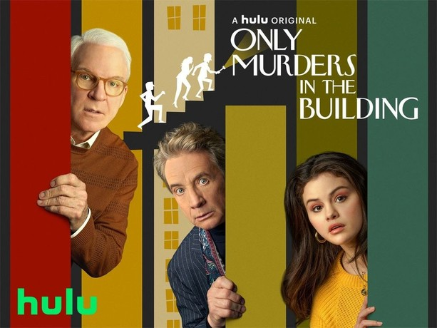
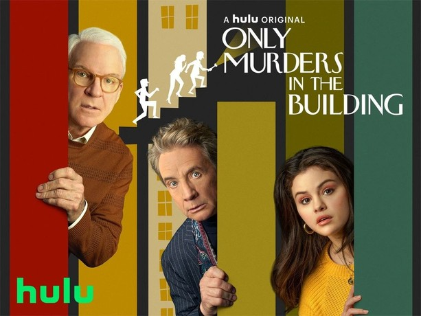

Hi! I'm Michelle.
I enjoy problem solving and solving puzzles which is one of the reasons I am drawn towards programming and computer science. On the creative side, I have strong passion and love for music. I have been playing piano since I was five years old and I love to sing. I can play a little bit of guitar too but piano is my main passion.
The reason why I am doing this software development course is because I am pursuing a career switch after a decade of a career in pharmacy and healthcare (nearly 6 years of working as a pharmacist, 4 years of pharmacy master degree and 1 year of pre-registration training).
When I was 17 years old, I was at a crossroad trying to decide which degree to study upon the completion of my A-Levels. My interest at the time was pursuing a career that will utilise either a background in science or mathematics. I was on the fence between computer science, aerospace engineering or pharmacy. At the time in 2012, the IT world was not the way it is now and one of the fear my parents had was that pursuing computer science would meant that I may not have a stable career prospects. Being so young and naive, societal and family pressure meant that I was lead down the "safe" path and so I decided to pursue pharmacy.
When I was in university for my pharmacy master degree, I always felt like something is missing and will seek opportunities to somehow immerse myself in mathematics or tech. For example, when I am learning about the formula for rate limiting steps during a physical pharmaceutics lecture, I would spend time in class figuring out how the mathematical formula is derived and will not stop till I was able to figure out how it is derived even though it is not part of the learning material.
I remember vividly during my final year project, I was getting frustrated with keeping track of multiple versions of my file document as naming files as "final_project_v2.docx", "final_project_FINAL.docx", "final_project_FINAL_FINAL.docx" is getting out of hand and was an inefficient method to keep track of which is the most recent version of my file.
Thus I set out to figure out a way to solve this problem and this is how I came across Git and thought this will be a great tool to use for version control for my final year project. From here, I learned about markdown and saved my document in markdown format, I also came across Bibtex for academic referencing and learned to use pandoc for final output of my document in PDF or DOCX format for final submission. I was very proud of myself for figuring this out was able to find a little joy in my degree despite it not being my first choice.
After graduating from university, I continued down the path of practicing as a pharmacist. Now in 2024, I feel complete in what I have achieved as a pharmacist and I decided that it is time to pursue the other passion I had when I was 17 which is programming thus why I was drawn towards this course. I look forward to meeting other liked-minded people at the bootcamp and looking forward to learning and working with others in a collaborative environment.
- David Archuleta (He's an American Idol runner up and I used to have a huge crush on him when I was a teen haha!)
- Lana Del Rey
- Taylor Swift
- High School Musical movies (especially the 1st and 3rd movie, not a huge fan of the second movie)
- Harry Potter movies
- Only Murders in the Building TV series
 
